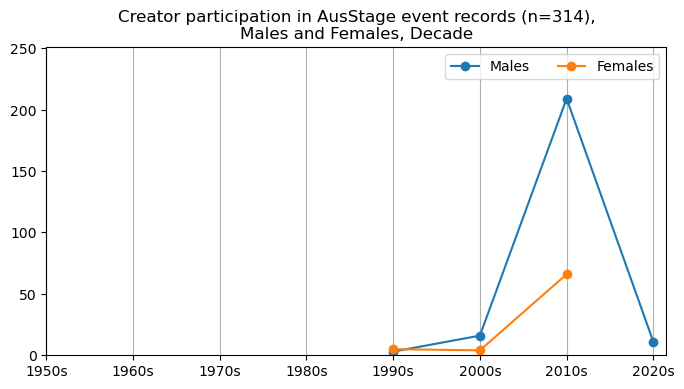
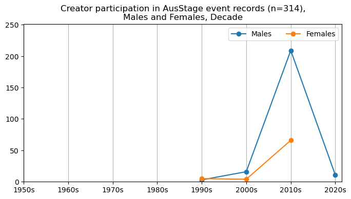

AusStage - Preliminary analysis#
This is an exploratory data analysis of collected data from AusStage with a focus on gender and roles. Throughout this analysis we use data that has also been filtered down to 253 person records with the richest data. We refer to this subset as AusStage253.
Import packages and data#
We import data from the data/analysis folder located in Github.
Show code cell source
# for data mgmt
import json
import pandas as pd
import numpy as np
from collections import Counter
from datetime import datetime
import os, requests, gzip, io
import ast
# for plotting
import matplotlib.pyplot as plt
import seaborn as sns
from itables import show
import warnings
warnings.filterwarnings("ignore")
# provide folder_name which contains uncompressed data i.e., csv and jsonl files
# only need to change this if you have already donwloaded data
# otherwise data will be fetched from google drive
global folder_name
folder_name = 'data/local'
def fetch_small_data_from_github(fname):
url = f"https://raw.githubusercontent.com/acd-engine/jupyterbook/master/data/analysis/{fname}"
if 'xlsx' in fname: return pd.read_excel(url)
else:
response = requests.get(url)
rawdata = response.content.decode('utf-8')
return pd.read_csv(io.StringIO(rawdata))
def fetch_date_suffix():
url = f"https://raw.githubusercontent.com/acd-engine/jupyterbook/master/data/analysis/date_suffix"
response = requests.get(url)
rawdata = response.content.decode('utf-8')
try: return rawdata[:12]
except: return None
def check_if_csv_exists_in_folder(filename):
try: return pd.read_csv(os.path.join(folder_name, filename), low_memory=False)
except: return None
def fetch_data(filetype='csv', acdedata='organization'):
filename = f'acde_{acdedata}_{fetch_date_suffix()}.{filetype}'
# first check if the data exists in current directory
data_from_path = check_if_csv_exists_in_folder(filename)
if data_from_path is not None: return data_from_path
urls = fetch_small_data_from_github('acde_data_gdrive_urls.csv')
sharelink = urls[urls.data == acdedata][filetype].values[0]
url = f'https://drive.google.com/u/0/uc?id={sharelink}&export=download&confirm=yes'
response = requests.get(url)
decompressed_data = gzip.decompress(response.content)
decompressed_buffer = io.StringIO(decompressed_data.decode('utf-8'))
try:
if filetype == 'csv': df = pd.read_csv(decompressed_buffer, low_memory=False)
else: df = [json.loads(jl) for jl in pd.read_json(decompressed_buffer, lines=True, orient='records')[0]]
return pd.DataFrame(df)
except: return None
acde_persons = fetch_data(acdedata='person')
ausstage_persons = acde_persons[acde_persons.data_source.str.contains('AusStage')]
ausstage_persons['ori_id'] = ausstage_persons.ori_id.astype(int)
ausstage_253 = fetch_small_data_from_github('AusStage253.xlsx')
ausstage_253_cols = ['original_id','state','birth_place','birth_date_yyyy','death_place','death_date_yyyy']
ausstage_253_merged = pd.merge(ausstage_persons, ausstage_253[ausstage_253_cols], left_on='ori_id',
right_on='original_id', how='right')
del ausstage_253
High-level overview#
We begin by computing some basic insights of the data, specifically fields that have been updated.
These include:
statebirth_placebirth_date_yyyydeath_placedeath_place_yyyy
The first plot displays the frequency of each state, according to AusStage253 person records. A majority of the records are from Victoria and New South Wales. Next we provide an overview of the remaining fields, in terms of the top 5 most frequently occuring values and missingness.
Show code cell source
ausstage_253_merged['state']\
.value_counts()\
.sort_values()\
.plot(kind='barh', figsize=(8, 5), legend=False)
plt.title('Number of records by state, n=235')
plt.show()
Show code cell source
missing_vals = ausstage_253_merged['birth_place'].isnull().sum()
print("There are {} ({}%) rows with missing birth_place in the dataset."\
.format(missing_vals, round(100*(missing_vals/ausstage_253_merged.shape[0]), 1)))
print("\nThese are the top 5 values in the birth_place column.")
print(ausstage_253_merged['birth_place'].value_counts().head(5))
missing_vals = ausstage_253_merged['birth_date_yyyy'].isnull().sum()
print("\nThere are {} ({}%) rows with missing birth_date_yyyy in the dataset."\
.format(missing_vals, round(100*(missing_vals/ausstage_253_merged.shape[0]), 1)))
print("\nThese are the top 5 values in the birth_date_yyyy column.")
print(ausstage_253_merged['birth_date_yyyy'].value_counts().head(5))
missing_vals = ausstage_253_merged['death_place'].isnull().sum()
print("\nThere are {} ({}%) rows with missing death_place in the dataset."\
.format(missing_vals, round(100*(missing_vals/ausstage_253_merged.shape[0]), 1)))
print("\nThese are the top 5 values in the death_place column.")
print(ausstage_253_merged['death_place'].value_counts().head(5))
missing_vals = ausstage_253_merged['death_date_yyyy'].isnull().sum()
print("\nThere are {} ({}%) rows with missing death_date_yyyy in the dataset."\
.format(missing_vals, round(100*(missing_vals/ausstage_253_merged.shape[0]), 1)))
print("\nThese are the top 5 values in the death_date_yyyy column.")
print(ausstage_253_merged['death_date_yyyy'].value_counts().head(5))
There are 159 (62.8%) rows with missing birth_place in the dataset.
These are the top 5 values in the birth_place column.
Melbourne 18
Sydney 15
Adelaide 13
Ballarat 3
Tamworth 3
Name: birth_place, dtype: int64
There are 140 (55.3%) rows with missing birth_date_yyyy in the dataset.
These are the top 5 values in the birth_date_yyyy column.
1967.0 6
1961.0 6
1966.0 5
1962.0 5
1943.0 5
Name: birth_date_yyyy, dtype: int64
There are 247 (97.6%) rows with missing death_place in the dataset.
These are the top 5 values in the death_place column.
Sydney 2
Double Bay 1
Canberra 1
Perth 1
Toowoomba 1
Name: death_place, dtype: int64
There are 237 (93.7%) rows with missing death_date_yyyy in the dataset.
These are the top 5 values in the death_date_yyyy column.
2022.0 3
2021.0 2
2019.0 1
2023.0 1
2001.0 1
Name: death_date_yyyy, dtype: int64
Gender#
We compare the gender proportions of AusStage253 with the entire AusStage persons dataset which consists of over 180k persons.
Show code cell source
## Gender Proportion
df_gender=ausstage_253_merged['gender']\
.value_counts()\
.reset_index()\
.rename({"index":"Gender", "gender":"Frequency"}, axis=1)
# explosion
explode = (0.05, 0.05)
# Pie Chart
plt.pie(df_gender[~df_gender['Gender'].isnull()]['Frequency'], labels=['Male','Female'],
autopct='%1.1f%%', pctdistance=0.85, colors=['tab:blue','tab:orange'],
explode=explode)
# draw circle
centre_circle = plt.Circle((0, 0), 0.70, fc='white')
fig = plt.gcf()
# Adding Circle in Pie chart
fig.gca().add_artist(centre_circle)
# Adding Title of chart
plt.title('Gender proportion, n=253')
# Displaying Chart
plt.show()
Show code cell source
## Gender Proportion
df_gender=ausstage_persons['gender']\
.value_counts()\
.reset_index()\
.rename({"index":"Gender", "gender":"Frequency"}, axis=1)
# explosion
explode = (0.05, 0.05, 0.05)
# Pie Chart
plt.pie(df_gender['Frequency'], labels=['Male','Female','Unknown'],
autopct='%1.1f%%', pctdistance=0.85, colors=['tab:blue','tab:orange','tab:green'],
explode=explode)
# draw circle
centre_circle = plt.Circle((0, 0), 0.70, fc='white')
fig = plt.gcf()
# Adding Circle in Pie chart
fig.gca().add_artist(centre_circle)
# Adding Title of chart
plt.title('Gender proportion, n=183,595')
# Displaying Chart
plt.show()
For further context, we visualise the number of active males and females over time for all AusStage records. We capture this activity by filtering on people that have a career start date and end date. The plot below shows a count of the cumulative career activity.
Show code cell source
# # daao_daqa_ausstage = acde_persons[acde_persons.data_source.str\
# # .contains('DAQA|DAAO|AusStage')][['gender', 'data_source', 'birth','death','career']]
# # daao_daqa_ausstage = daao_daqa_ausstage[daao_daqa_ausstage['career'].notnull()]
# # selected_idx = []
# # selected_birth_year = []
# # selected_start_year = []
# # selected_end_year = []
# # selected_death_year = []
# # for idx,row in daao_daqa_ausstage.iterrows():
# # try: selected_birth_year.append(int(pd.json_normalize(json.loads(row['birth']))['coverage.date.year'].values[0]))
# # except: selected_birth_year.append(np.nan)
# # try:
# # career_df = pd.json_normalize(pd.json_normalize(json.loads(row['career']))['career_periods'].values[0])
# # selected_start_year.append(career_df['coverage_range.date_range.date_start.year'].min())
# # except: selected_start_year.append(np.nan)
# # try:
# # career_df = pd.json_normalize(pd.json_normalize(json.loads(row['career']))['career_periods'].values[0])
# # selected_end_year.append(career_df['coverage_range.date_range.date_end.year'].max())
# # except: selected_end_year.append(np.nan)
# # try: selected_death_year.append(int(pd.json_normalize(json.loads(row['death']))['coverage.date.year'].values[0]))
# # except: selected_death_year.append(np.nan)
# # # daao_daqa = daao_daqa[daao_daqa.index.isin(selected_idx)].copy()
# # daao_daqa_ausstage['birth_year'] = selected_birth_year
# # daao_daqa_ausstage['career_start'] = selected_start_year
# # # return max year of selected_end_year and death_year, there may be nan values
# # daao_daqa_ausstage['career_end'] = selected_end_year
# # daao_daqa_ausstage['death_year'] = selected_start_year
# # # manipulate career_start so that each value contains the first 4 digits
# # daao_daqa_ausstage['career_start'] = daao_daqa_ausstage['career_start'].apply(lambda x: np.nan if isinstance(x,float) else str(x)[:4])
# # daao_daqa_ausstage['career_end'] = daao_daqa_ausstage['career_end'].apply(lambda x: np.nan if isinstance(x,float) else str(x)[:4])
# # daao_daqa_ausstage['death_year'] = daao_daqa_ausstage['death_year'].apply(lambda x: np.nan if isinstance(x,float) else str(x)[:4])
# # # change all strings that are not numbers to nan
# # daao_daqa_ausstage['career_start'] = daao_daqa_ausstage['career_start'].apply(lambda x: int(x) if str(x).isdigit() else np.nan)
# # daao_daqa_ausstage['career_end'] = daao_daqa_ausstage['career_end'].apply(lambda x: int(x) if str(x).isdigit() else np.nan)
# # daao_daqa_ausstage['death_year'] = daao_daqa_ausstage['death_year'].apply(lambda x: int(x) if str(x).isdigit() else np.nan)
# daao_daqa_ausstage = daao_daqa_ausstage[daao_daqa_ausstage['gender'].notnull()]
# daao_daqa_ausstage['gender'] = daao_daqa_ausstage['gender'].apply(lambda x: str(x.replace('"', '')))
# daao_daqa_ausstage['data_source'] = daao_daqa_ausstage['data_source'].apply(lambda x: str(x.replace('"', '')))
# daao_daqa_ausstage = daao_daqa_ausstage[daao_daqa_ausstage['gender']\
# .str.contains('ale')][['gender','data_source','birth_year','death_year','career_start','career_end']]
# daao_daqa_ausstage = daao_daqa_ausstage[(daao_daqa_ausstage.death_year.notnull()) | (daao_daqa_ausstage.career_end.notnull())].copy()
# daao_daqa_ausstage['career_end'] = daao_daqa_ausstage['career_end'].fillna(-1)
# daao_daqa_ausstage['death_year'] = daao_daqa_ausstage['death_year'].fillna(-1)
# daao_daqa_ausstage['career_end'] = np.where(daao_daqa_ausstage['career_end'] > daao_daqa_ausstage['death_year'],
# daao_daqa_ausstage['career_end'], daao_daqa_ausstage['death_year'])
# daao_daqa_ausstage = daao_daqa_ausstage[daao_daqa_ausstage['career_start'].notnull()][['gender','data_source','career_start','career_end']]
# daao_daqa_ausstage = daao_daqa_ausstage[daao_daqa_ausstage['career_start'] != daao_daqa_ausstage['career_end']]
# daao_daqa_ausstage.reset_index(inplace=True, drop=True)
# daao_daqa_ausstage_wide = pd.DataFrame()
# for i,row in daao_daqa_ausstage.iterrows():
# for year in range(int(row['career_start']), int(row['career_end'])+1):
# daao_daqa_ausstage_wide.loc[i, year] = 1
# daao_daqa_ausstage_wide = daao_daqa_ausstage_wide.fillna(0)
# daao_daqa_ausstage_wide = pd.merge(daao_daqa_ausstage, daao_daqa_ausstage_wide, left_index=True, right_index=True)
# daao_females_wide = daao_daqa_ausstage_wide[(daao_daqa_ausstage_wide.gender == 'female') & (daao_daqa_ausstage_wide.data_source == 'DAAO')].copy()
# daao_males_wide = daao_daqa_ausstage_wide[(daao_daqa_ausstage_wide.gender == 'male') & (daao_daqa_ausstage_wide.data_source == 'DAAO')].copy()
# daqa_females_wide = daao_daqa_ausstage_wide[(daao_daqa_ausstage_wide.gender == 'female') & (daao_daqa_ausstage_wide.data_source == 'DAQA')].copy()
# daqa_males_wide = daao_daqa_ausstage_wide[(daao_daqa_ausstage_wide.gender == 'male') & (daao_daqa_ausstage_wide.data_source == 'DAQA')].copy()
# ausstage_females_wide = daao_daqa_ausstage_wide[(daao_daqa_ausstage_wide.gender == 'Female') & (daao_daqa_ausstage_wide.data_source == 'AusStage')].copy()
# ausstage_males_wide = daao_daqa_ausstage_wide[(daao_daqa_ausstage_wide.gender == 'Male') & (daao_daqa_ausstage_wide.data_source == 'AusStage')].copy()
# daao_females_wide = daao_females_wide.drop(['gender','data_source','career_start','career_end'], axis=1)
# daao_males_wide = daao_males_wide.drop(['gender','data_source','career_start','career_end'], axis=1)
# daao_gender_count = pd.merge(daao_males_wide.sum().reset_index().sort_values('index', ascending=True),
# daao_females_wide.sum().reset_index().sort_values('index', ascending=True),
# on='index', how='outer')
# daao_gender_count.columns = ['year','male','female']
# daao_gender_count['data_source'] = 'DAAO'
# daqa_females_wide = daqa_females_wide.drop(['gender','data_source','career_start','career_end'], axis=1)
# daqa_males_wide = daqa_males_wide.drop(['gender','data_source','career_start','career_end'], axis=1)
# daqa_gender_count = pd.merge(daqa_males_wide.sum().reset_index().sort_values('index', ascending=True),
# daqa_females_wide.sum().reset_index().sort_values('index', ascending=True),
# on='index', how='outer')
# daqa_gender_count.columns = ['year','male','female']
# daqa_gender_count['data_source'] = 'DAQA'
# ausstage_females_wide = ausstage_females_wide.drop(['gender','data_source','career_start','career_end'], axis=1)
# ausstage_males_wide = ausstage_males_wide.drop(['gender','data_source','career_start','career_end'], axis=1)
# ausstage_gender_count = pd.merge(ausstage_males_wide.sum().reset_index().sort_values('index', ascending=True),
# ausstage_females_wide.sum().reset_index().sort_values('index', ascending=True),
# on='index', how='outer')
# ausstage_gender_count.columns = ['year','male','female']
# ausstage_gender_count['data_source'] = 'AusStage'
# daqa_daao_ausstage_gender_count = pd.concat([daao_gender_count, daqa_gender_count, ausstage_gender_count])
# daqa_daao_ausstage_gender_count.to_csv('data/local/AusStage_gender_comparison.csv', index=False)
Show code cell source
daqa_daao_ausstage_gender_count = fetch_small_data_from_github('AusStage_gender_comparison.csv')
plt.plot(daqa_daao_ausstage_gender_count[daqa_daao_ausstage_gender_count.data_source == 'AusStage']['year'],
daqa_daao_ausstage_gender_count[daqa_daao_ausstage_gender_count.data_source == 'AusStage']['male'],
label='Male', color='tab:blue')
plt.plot(daqa_daao_ausstage_gender_count[daqa_daao_ausstage_gender_count.data_source == 'AusStage']['year'],
daqa_daao_ausstage_gender_count[daqa_daao_ausstage_gender_count.data_source == 'AusStage']['female'],
label='Female', color='tab:orange')
plt.title('Number of active males and females for AusStage, n=177,602')
plt.xlabel('Year of career activity')
plt.legend()
# increase the size of the plot
fig = plt.gcf()
fig.set_size_inches(12, 4)
plt.show()
To extend the above plot, we also visualise the proportion of active males and females over time, and compare with DAQA and DAAO records. The visualisation suggest that the gender disparity is not as pronounced in DAAO and AusStage as it is in DAQA.
Show code cell source
daqa_daao_ausstage_gender_count['male_to_female'] = (daqa_daao_ausstage_gender_count.male/(daqa_daao_ausstage_gender_count.male + daqa_daao_ausstage_gender_count.female))
# plot
plt.plot(daqa_daao_ausstage_gender_count[daqa_daao_ausstage_gender_count.data_source == 'AusStage']['year'],
daqa_daao_ausstage_gender_count[daqa_daao_ausstage_gender_count.data_source == 'AusStage']['male_to_female'],
label='AusStage Male-Female Ratio', color='tab:orange')
plt.plot(daqa_daao_ausstage_gender_count[daqa_daao_ausstage_gender_count.data_source == 'DAAO']['year'],
daqa_daao_ausstage_gender_count[daqa_daao_ausstage_gender_count.data_source == 'DAAO']['male_to_female'],
label='DAAO Male-Female Ratio', color='tab:blue')
plt.plot(daqa_daao_ausstage_gender_count[daqa_daao_ausstage_gender_count.data_source == 'DAQA']['year'],
daqa_daao_ausstage_gender_count[daqa_daao_ausstage_gender_count.data_source == 'DAQA']['male_to_female'],
label='DAQA Male-Female Ratio', color='tab:green')
plt.title('Proportion of active males and females for AusStage, DAAO and DAQA (represented as a ratio), 1800-2020')
plt.ylabel('Male-to-female ratio')
plt.xlabel('Year of career activity')
plt.legend()
# change x-axis limit
plt.xlim(1850, 2025)
# change x-axis tick frequency
plt.xticks(np.arange(1850, 2025, 10))
# add line at 50% mark
plt.axhline(y=0.5, color='grey', linestyle='--', alpha=0.3)
# increase the size of the plot
fig = plt.gcf()
fig.set_size_inches(12, 4)
plt.show()
Career trajectories of AusStage253 persons#
We start by calculating the number of roles per person as provided in the career field. We then plot the distribution of the number of roles per person. On average, AusStage253 persons have 6.7 unique roles.
Show code cell source
event_data = pd.DataFrame()
for idx,row in ausstage_253_merged.iterrows():
# skip if no related events
try:
rel_events = pd.json_normalize(pd.json_normalize(json.loads(row['career']))['career_periods'][0])
# add person info
rel_events['ori_id'] = row.ori_id
rel_events['display_name'] = row.display_name
rel_events['gender'] = row.gender
rel_events['state'] = row.state
# add to exhibition_data
event_data = pd.concat([event_data, rel_events], axis=0)
except: pass
Show code cell source
# average number of roles
no_roles = event_data[['occupation.title','ori_id']]\
.drop_duplicates()[['ori_id','occupation.title']]\
.value_counts().reset_index()['ori_id']\
.value_counts()
no_roles.plot(kind='hist', bins=25, figsize=(8,5),
title=f'Number of roles per person, n=235, Mean={round(no_roles.mean(),1)}')
plt.show()
Most of the data clusters around the mean, however there a few outliers that are skewing the data. We list the top five outliers below.
Show code cell source
# top 5
pd.merge(no_roles.head(5).reset_index().rename(columns={'index':'ori_id', 'ori_id':'Role Count'}),
event_data[['ori_id', 'display_name']], on='ori_id', how='left').drop_duplicates()[['display_name', 'Role Count']]
| display_name | Role Count | |
|---|---|---|
| 0 | "Mr Robert Kenneth Leslie Taylor" | 32 |
| 562 | "Catherine Fitzgerald" | 19 |
| 782 | "Eddie Perfect" | 18 |
| 898 | "Sean Weatherly" | 18 |
| 1012 | "Jim Sharman" | 18 |
Beyond the number of roles per person, we also inspect the most frequent roles in terms of participation frequency. We list the top ten roles according to the AusStage253 subset. Most people are recorded as actors.
Show code cell source
# number of roles for all events
event_data['occupation.title'].value_counts().head(10)
Actor 10147
Director 4085
Lighting Designer 2458
Performer 1022
Designer 955
Playwright 710
Writer 502
Adaptor 483
Devisor 423
Stage Manager 391
Name: occupation.title, dtype: int64
We also assess the number of distinct roles per person. The average number of distinct roles per person is 1.5. The maximum number of distinct roles per person is 5. Here we can see that 225 out of 253 people have held an actor role (89%). This is followed by director, which is held by 142 people, roughly half of the people in the AusStage253 dataset.
Show code cell source
# Count of distinct roles for each person
events_occupations = event_data[['occupation.title','ori_id']]\
.drop_duplicates()['occupation.title']\
.value_counts()\
.reset_index()\
.rename(columns={'index':'Occupation','occupation.title':'Count'})
# add proportion column
events_occupations['Percentage (out of 253)'] = round((events_occupations['Count']/253)*100,2)
events_occupations.head(20)
| Occupation | Count | Percentage (out of 253) | |
|---|---|---|---|
| 0 | Actor | 225 | 88.93 |
| 1 | Director | 142 | 56.13 |
| 2 | Performer | 125 | 49.41 |
| 3 | Writer | 63 | 24.90 |
| 4 | Devisor | 62 | 24.51 |
| 5 | Playwright | 60 | 23.72 |
| 6 | Designer | 50 | 19.76 |
| 7 | Actor and Singer | 50 | 19.76 |
| 8 | Assistant Director | 49 | 19.37 |
| 9 | Adaptor | 47 | 18.58 |
| 10 | Set Designer | 36 | 14.23 |
| 11 | Producer | 34 | 13.44 |
| 12 | Singer | 33 | 13.04 |
| 13 | Stage Manager | 32 | 12.65 |
| 14 | Creator | 31 | 12.25 |
| 15 | Dramaturg | 29 | 11.46 |
| 16 | Lighting Designer | 28 | 11.07 |
| 17 | Assistant Stage Manager | 27 | 10.67 |
| 18 | Dancer | 23 | 9.09 |
| 19 | Production Manager | 22 | 8.70 |
The initial plan was to consider the average career span of different roles, however we did find that there were over 4000 missing values for career end year data for roles. This differs greatly to career start year data, which has no missing data. Therefore, we focus more on the average career span for each person.
We first plot the distribution of career start date for each role records for each person. The data peaks around the 2010s. We provide this by year and by decade.
Show code cell source
missing_vals = event_data['coverage_range.date_range.date_end.year'].isnull().sum()
missing_vals_prop = round(100*(missing_vals / len(event_data)),1)
print(f'There are {missing_vals} ({missing_vals_prop}%) missing values in the coverage_range.date_range.date_end.year column.\n')
event_data['coverage_range.date_range.date_start.year'] = event_data['coverage_range.date_range.date_start.year'].astype(int)
event_data['coverage_range.date_range.date_end.year'].fillna(event_data['coverage_range.date_range.date_start.year'], inplace=True)
event_data['coverage_range.date_range.date_end.year'] = event_data['coverage_range.date_range.date_end.year'].astype(int)
event_data['coverage_range.date_range.date_start.year'].astype(int).hist(bins=25)
plt.title('Distribution of event start year, Year')
plt.show()
There are 4460 (17.0%) missing values in the coverage_range.date_range.date_end.year column.
Show code cell source
event_data['decade'] = event_data['coverage_range.date_range.date_start.year'].apply(lambda x: str(x)[:3] + '0s')
event_data['decade'].value_counts().reset_index().sort_values('index').rename(columns={'index': 'decade', 'decade': 'count'})\
.plot.bar(x='decade', y='count', figsize=(8, 5), title='Distribution of event start year, Decade', rot=0, legend=False)
plt.show()
Next we iterate over each person’s roles and define their career start date by subtracting the start date years of the last role and first role. The histogram and boxplot below highlights the distribution.
Show code cell source
career_tenure = []
for id in event_data['display_name'].unique():
firstyear = event_data[event_data['display_name'] == id]['coverage_range.date_range.date_start.year'].min()
lastyear = event_data[event_data['display_name'] == id]['coverage_range.date_range.date_start.year'].max()
career_tenure.append([id, firstyear, lastyear])
career_tenure = pd.DataFrame(career_tenure, columns=['display_name', 'firstyear', 'lastyear'])
career_tenure['career_length'] = (career_tenure['lastyear'] - career_tenure['firstyear'] + 1)
career_tenure['career_length'].plot.hist(bins=20, figsize=(8, 5),
title=f'Distribution of career length, n=235, Mean={round(career_tenure.career_length.mean(),1)}')
plt.show()
career_tenure['career_length'].plot.box(figsize=(8, 5), title='Career Length (years), n=235', vert=True)
plt.show()
We also assess the average duration for each person’s role which calculates to be roughly one year for each record. Some roles such as Stage Director, Casting Director and Original Director tend to be slightly higher i.e., over 1.25 years on average. Below the plot, we provide top five roles based on average duration.
Show code cell source
career_byrole_tenure = []
for id in event_data['occupation.title'].unique():
this_role = event_data[event_data['occupation.title'] == id]
thisrole_count = this_role['display_name'].nunique()
career_length = (this_role['coverage_range.date_range.date_end.year'] - this_role['coverage_range.date_range.date_start.year'] + 1).mean()
career_byrole_tenure.append([id, career_length, thisrole_count])
career_byrole_tenure = pd.DataFrame(career_byrole_tenure, columns=['occupation.title', 'career_length', 'unique_person_count'])
career_byrole_tenure['career_length'].plot.box(figsize=(8, 5), title='Career Length by role (years), n=235', vert=True)
plt.show()
Show code cell source
career_byrole_tenure.sort_values('career_length', ascending=False).head(5)
| occupation.title | career_length | unique_person_count | |
|---|---|---|---|
| 117 | Stage Director | 1.250000 | 4 |
| 144 | Casting Director | 1.245283 | 2 |
| 63 | Original Director | 1.230769 | 4 |
| 92 | Resident Director | 1.187500 | 5 |
| 17 | Actor and Singer | 1.125749 | 50 |
Note that most of the roles above only have a handful of records (see unique_person_count column). Therefore, we apply a filter to only consider roles with more than 30 records. This leaves us with fifteen role types.
Show code cell source
# top 15 roles by number of people
top15 = career_byrole_tenure[career_byrole_tenure.unique_person_count > 30]
top15.sort_values(by=['career_length'], ascending=False)
| occupation.title | career_length | unique_person_count | |
|---|---|---|---|
| 17 | Actor and Singer | 1.125749 | 50 |
| 4 | Actor | 1.023061 | 225 |
| 32 | Designer | 1.023037 | 50 |
| 7 | Producer | 1.017094 | 34 |
| 43 | Devisor | 1.014184 | 62 |
| 35 | Writer | 1.013944 | 63 |
| 37 | Director | 1.013464 | 142 |
| 16 | Performer | 1.012720 | 125 |
| 33 | Set Designer | 1.010782 | 36 |
| 56 | Adaptor | 1.008282 | 47 |
| 72 | Assistant Director | 1.005128 | 49 |
| 6 | Stage Manager | 1.005115 | 32 |
| 57 | Playwright | 1.002817 | 60 |
| 40 | Creator | 1.000000 | 31 |
| 42 | Singer | 1.000000 | 33 |
Drilldown into top 15 roles#
We now will visualise career trajectories by gender and role. We show this as a frequency over time and as a proportion over time. This will allow us to identify any role-specific trends across gender and time. We inspect the top fifteen roles with the largest frequency in the AusStage253 data.
Show code cell source
event_data_top15 = event_data[event_data['occupation.title'].isin(top15['occupation.title'])]
events_tab_template = event_data_top15[event_data_top15.gender=='"Male"']['decade']\
.value_counts()\
.reset_index()\
.sort_values('index')
def drilldown_by_role(role='Actor', data=None):
aa = data[data['occupation.title'] == role]
# males
events_males_tab = aa[aa.gender=='"Male"']['decade']\
.value_counts()\
.reset_index()\
.sort_values('index')
# add decade column for events_males_tab and events_males_tab_template
events_males_tab = pd.merge(events_males_tab, events_tab_template, on='index', how='outer')\
.sort_values('index')\
.drop('decade_y', axis=1)\
.rename(columns={'decade_x':'decade'})
events_males_tab['gender'] = 'Male'
# females
events_females_tab = aa[aa.gender =='"Female"']['decade']\
.value_counts()\
.reset_index()\
.sort_values('index')
# add decade column for events_females_tab and events_males_tab_template
events_females_tab = pd.merge(events_females_tab, events_tab_template, on='index', how='outer')\
.sort_values('index')\
.drop('decade_y', axis=1)\
.rename(columns={'decade_x':'decade'})
events_females_tab['gender'] = 'Female'
total_count = events_males_tab['decade'].sum() + events_females_tab['decade'].sum()
# gender frequency over decade
fig, ax = plt.subplots(figsize=(8, 4))
plt.plot(events_males_tab['index'],
events_males_tab['decade'],
label="Males", marker='o')
plt.plot(events_females_tab['index'],
events_females_tab['decade'],
label="Females", marker='o')
plt.xticks(range(0, 8, 1),
['1950s', '1960s','1970s', '1980s', '1990s','2000s', '2010s', '2020s'])
plt.grid(axis='x')
if events_males_tab['decade'].max() > events_females_tab['decade'].max():
plt.ylim(0,events_males_tab['decade'].max()*1.2)
else: plt.ylim(0,events_females_tab['decade'].max()*1.2)
plt.title(f'{role} participation in AusStage event records (n={int(total_count)}),\nMales and Females, Decade')
ax.legend(loc="upper right", ncol=2)
plt.show()
# gender proportion over decade
fig, ax = plt.subplots(figsize=(8, 4))
ff = pd.DataFrame(pd.crosstab(aa['decade'],
aa['gender'],normalize='index')['"Female"']).reset_index()
ff = pd.merge(ff, events_tab_template, left_on='decade', right_on='index', how='outer')\
.sort_values('index')\
.drop(['decade_x','decade_y'], axis=1)\
.rename(columns={'index':'decade'})
mm = pd.DataFrame(pd.crosstab(aa['decade'],
aa['gender'],normalize='index')['"Male"']).reset_index()
mm = pd.merge(mm, events_tab_template, left_on='decade', right_on='index', how='outer')\
.sort_values('index')\
.drop(['decade_x','decade_y'], axis=1)\
.rename(columns={'index':'decade'})
plt.plot(mm['decade'],
mm['"Male"'],
label="Males", marker='o')
plt.plot(ff['decade'],
ff['"Female"'],
label="Females", marker='o')
ax.legend(loc="upper right", ncol=2)
plt.xlabel('Decade')
plt.ylim([-0.1, 1.13])
plt.xticks(range(0, 8, 1),
['1950s', '1960s','1970s', '1980s', '1990s','2000s', '2010s', '2020s'])
plt.grid(axis='x')
# add line at 50% mark
plt.axhline(y=0.5, color='grey', linestyle='--', alpha=0.3)
plt.title(f'{role} participation proportion in AusStage event records (n={int(total_count)}),\nMales and Females, Decade')
plt.show()
for top15role in top15['occupation.title'].unique():
drilldown_by_role(role=top15role, data=event_data_top15)
 
